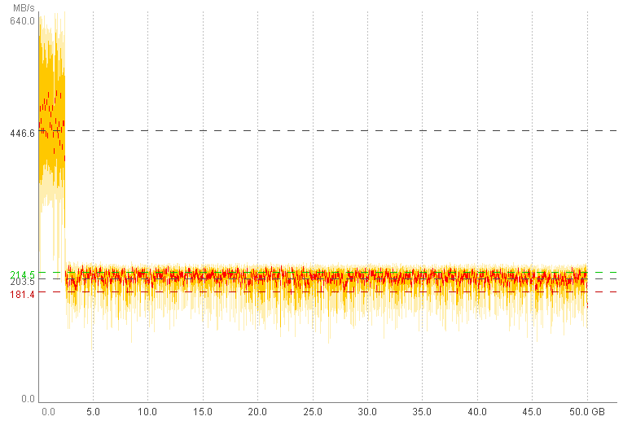
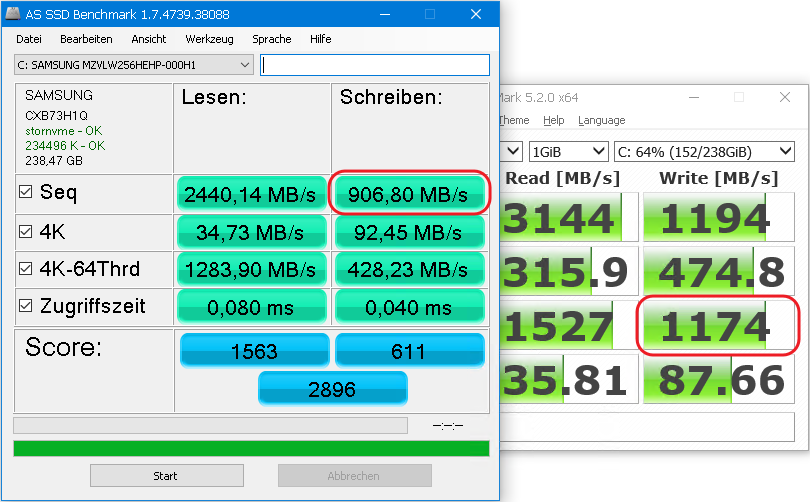

Недавно я был очень озадачен тем фактом что копирование 400 GB с одного диска NVMe SSD на другой диск NVMe SSD заняло почти 2 часа вместо ожидаемых 10-20 минут, а то и быстрее. Вместо этого я получил скорость как на HDD 10 лет назад.
Похоже что заоблачные скорости получаемые от бенчмарков типа CrystalDiskMark и AS SSD измеряют скорость так называемого SLC кэша на вашем диске - размер памяти, который 'обычно' не больше 10GB.
Копаясь в интернете мне не удалось найти сравнительную статистику реальных скоростей SSD дисков а так же не попалось программ, которыми можно адекватно измерить скорость SSD дисков которые есть под рукой. Поэтому я решил написать свою.
Пожалуйста, встречайте ещё одно средство для измерения скорости SSD - SSD SlowMark.
Он умеет измерять только две вещи - Скорость Последовательного Чтения и Скорость Последовательной записи. Но в отличите от других программ ...
Ещё один тест возможно будет добавлен в будущем - время на которое замирает диск при удалении большого объёма данных (N*10GB). В это время диск обрабатывает команду TRIM. Некоторые диски при этом полностью замирают на насколько секунд, некоторые временно начинают значительно медленнее работать.
Типичный график Записи на современных NVMe SSD дисках выглядит как на картинке ниже (конечно сделанной в SSD SlowMark):
С помощью SSD SlowMark вы сможете лучше понять на что способен ваш SSD и в будущем не разочароваться слишком маленькой скоростью когда ожидаете значительно большего.


Типичные результаты тестов приводимые в интернете были получены на совершенно новом и пустом SSD. Это неправильно. Почему? - потому что скорость SSD зачастую падает по мере заполнение, а мы же не покупаем SSD чтобы он оставался пустым.
Поэтому давайте тестировать диски в состоянии близком к обычным условиям, т.е. изначально диск заполнен на 50% (и более) и после записи полного набора данных на диске остаётся ещё 10-30% свободного места.
По моим наблюдениям, в таких услових, размер данных и достаточный для измерения эффективного размера SLC кэша и для быстрого исполнения теста - 50GB. Поэтому давайте использовать это размер для сравнения разных дисков.
На пример:
А теперь ...
Для экспериментаторов ...
В отчёте вы найдёте:
И ниже можно найти собственно-ручно собранные результаты по некоторым SSD дискам
| Drive Model | Type | Size, GB | Year | Price, $$$ | Read MB/s | Write MB/s | Cache Write MB/s | Cache Size GB |
|---|---|---|---|---|---|---|---|---|
| WD Black 2018 | M.2: NVMe | 500 | 2018 | $120 | 1975 | 450 | 840 | 5.5 |
| Intel 660p | M.2: NVMe | 1000 | 2018 | $130 | 1350 | 70 | 700 | (?) 20 |
| AData SP550NS38 | 2.5: SATA | 240 | ??? | ??? | 450 | 125 | - | - |
| Goodram CX200 | 2.5: SATA | 480 | 2016 | ??? | 440 | 220 | - | - |
| Samsung MZVLW256HEHP | 2.5: SATA | 256 | 2016 | ??? | 1850 | 203 | 445 | 2.5 |
| Samsung 850 EVO | 2.5: SATA | 500 | ??? | ??? | 460 | 150 | 295 | 5.5 |
| SanDisk SDSSDHII | 2.5: SATA | 480 | 2014 | ??? | 470 | 130 | - | - |
Замечение - график чтения и записи для Intel 660p выглядит очень странным ...
Если у вас есть полезные результаты тестов ...
- свежие модели SSD дисков
- старые модели, но всё ещё рекомендуемые к покупке
... и вы желаете опубликовать их тут, отправьте архив с содержимым папки отчёта на
software.tools4free@gmail.com.
Дополнительно укажите тип подключения, он может быть разным у одной модели.